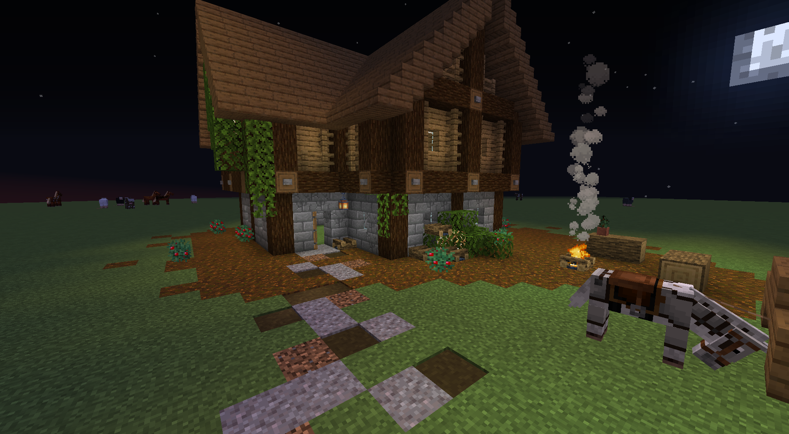
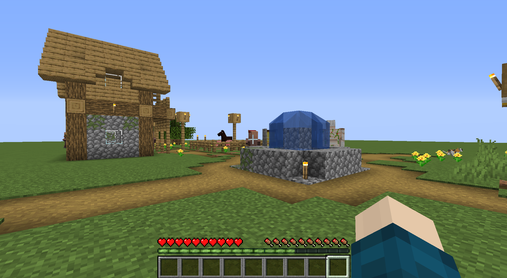

What is Minecraft?
Minecraft is a game of creativity, where, although there is technically an 'end' to the game, it is endless, and infinite. The game consists of two main game-modes: Survival and creative. If you are playing in creative mode, you can fly, and have access to infinite resources and materials. If you are playing in survival, you need to... Survive (obviously) and you must collect and gather resources from scratch.
Minecraft is a game of blocks, where the entire landscape and all materials are intentionally blocky. This leads to more creativity, as things can be interpreted in many different ways. Below is a picture of a fantasy themed house I built in creative mode.

When playing survival, Minecraft is more than just building nice looking structures. The player has a hunger bar, and a health bar. The hunger bar (represented by a line of chicken drumsticks) slowly goes down over time, and will speed up if you are doing any form of strenuous activity (eg: running, destroying blocks, placing blocks etc.) and will raise if you eat food. Food can be obtained by farming crops, and killing animals for meat. The health bar goes down if your hunger bar is on zero, or you have been attacked by a creature (hostile monsters come out at night) Below is an image of survival gameplay, notice the inventory slots (where the player can keep items) and the health and hunger bars.

In survival, players can also mine underground for materials such as iron and gold. These can be used to make tools and armour. There are 5 types of tools: Pickaxe, axe, sword, shovel and hoe. Armour consists of: Helm, chestplate, leggings and boots. As of update 1.15, there are 4 tiers of materials: Wood, iron, gold and diamond (this is ordered in worst to best, but tools can be made out of stone, which would be placed imbetween wood and iron). In the next update, 1.16, we will be getting a new tier called netherite. These tiers are also ordered from easiest to obtain to hardest. Diamond swords deal 7 damage to a creature, while wooden swords only deal 4 damage. This also applies to the speed of destroying something for axes, shovels and pickaxes. Hoes are used to till soil for planting crops, and thier only defining feature per tier is that higher tiers have higher durability (they can till more soil until they break). Armour's defining features per tier are their durability, and how much damage they can protect you from.
How can I get better at Minecraft?
To get better at minecraft, the best advice is to play, and watch other people play it. You can go on Youtube and find people that play the game on a large scale, and they know what they're doing. If you are playing on the Windows 10 edition, there are free worlds created by Mojang (the swedish creators of Minecraft, pronounced mo-yang) that walk you through the basics of the game.
I like to play this game because of the creative aspect. I like to make cool structures, and have towns of different themes (eg: Fantasy, medieval, western, pirate etc.) When I have finally finished creating a structure, I get a sense of satisfaction, and completion. If I do really well, I become very proud of my creations.